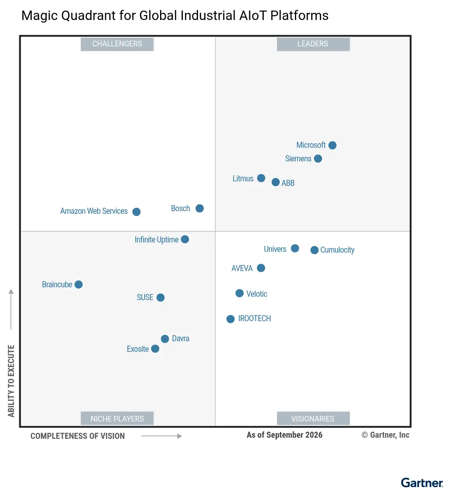

请访问原文链接：Magic Quadrant for Global Industrial AIoT Platforms 2026 - 全球工业 AIoT 平台 查看最新版。原创作品，严禁商业及个人盈利性网站转载。
作者主页：sysin.org
Gartner 魔力象限：全球工业 AIoT 平台 2026
Gartner Magic Quadrant for Global Industrial AIoT Platforms 2026
Published 15 September 2026

魔力象限
全球工业 AIoT 平台正在融入智能体式 AI 能力，以实现自主运营。本魔力象限重点介绍物联网在这一重要转型中的作用，同时提醒首席信息官（CIO），该市场在发展演进、采用和价值交付方面仍处于早期阶段。
🤖 战略规划假设
到 2030 年，工业 AIoT 平台提供商的 AI 智能体中，将有 65% 部署在所有资产密集型行业的生产环境中，而目前这一比例为 3%。
🤖 市场定义/描述
Gartner 将全球工业人工智能物联网（AIoT）平台市场定义为一系列无缝集成的技术。该市场提供工业数据聚合与整理、工业资产的工业物联网（IIoT）设备管理、与 IT 系统的便捷集成，并释放工业应用和 AI 的价值。该平台聚合、整理并提供经过情境化处理的洞察，以支持工业应用、分析以及由 AI 驱动的洞察。所有功能均应支持本地部署、云端部署和混合部署。
工业 AIoT 平台负责监控物联网端点和事件流，支持并转换使用各种制造商专有协议和行业专有协议的数据。该平台可在平台内部、边缘端和云端分析实时数据，并通过数据共享与消费整合和连接 IT 系统及运营技术（OT）系统。该平台支持应用程序的开发与部署，并扩展和增强 OT 功能，以改进资产管理生命周期战略和流程。在一些新兴用例中，AIoT 平台使用先进的 AI 技术（智能体式 AI）取代部分选定的 OT 分析软件功能，同时保持工业环境所要求的可靠性、响应能力、确定性和运营安全水平。近年来，工业 AIoT 平台已成为在实际工业运营中部署、编排和执行 AI 模型的首选平台 (s)，并利用数据管理功能取代传统的历史数据库。
工业 AIoT 平台与物联网边缘计算相结合，并通过企业 IT/OT 集成，使资产密集型行业能够转型为数字化企业。这一转型由 2010 年代兴起的工业 4.0 所推动。通过增强核心业务并将其与外部业务合作伙伴连接起来，资产密集型行业正在转变其运营模式，以实现更高水平的自动化和优化。如今，随着最新的工业 5.0 趋势，这些行业正致力于让人类持续参与决策或操作环节，并实现可持续的关键绩效指标（KPI）。
相关的横向和纵向业务应用不在本报告的范围内。这些应用包括：
- 企业资产管理（EAM）
- 计算机化维护管理系统（CMMS）
- 车队管理
- 基于状态的维护（CBM）
- OT 功能中的预测性维护
- 制造执行系统（MES）
- 维护、维修和运营（MRO）
- 产品生命周期管理（PLM）
- 资产绩效管理（APM）
- 现场服务管理（FSM）
- 楼宇管理系统（BMS）
工业 AIoT 平台可以软件或云服务的形式使用，也可以作为技术套件、开放式通用应用平台，或结合分析、应用赋能、数据管理、设备管理、集成和安全等功能能力来使用。该平台经过专门设计，能够满足与工业资产及其运行环境相关的安全要求和关键任务要求。
✅ 必备功能
全球工业 AIoT 平台必须具备以下功能：
- 设备管理：该功能支持通过手动和自动化任务，远程批量或单独地创建、配置、部署、排查故障并安全管理物联网设备及网关群组。设备生命周期管理应具备设备接入、配置、维护、升级和退役等功能。
- 集成：该功能包括通信协议、API 和应用适配器等工具与技术，用于满足云端和本地部署环境中端到端 AIoT 解决方案所需的数据、流程、企业应用和 AIoT 生态系统集成要求。AIoT 平台可与工业物联网（IIoT）设备（例如通信模块和控制器）、IIoT 网关、历史数据库、OT 系统（硬件、软件和工业应用）以及企业应用（例如 ERP、EAM 和 CMMS）集成。
- 数据采集与管理：该功能包括以下能力：
- 接收来自物联网端点和边缘设备的数据。
- 存储来自多个工业数据源的数据，例如历史数据库、数据控制系统、时序数据库管理系统（DBMS）和边缘网关。
- 提供数据访问能力，以便设备、IT、OT、工程技术系统以及必要时的外部各方访问数据。
- 工业数据整理与编排。
- 跟踪数据的来源及流转过程。
- 执行数据和分析治理政策，以确保数据的质量、安全性、隐私性和时效性。
- 工业数据管理能力，例如：
- 标签标记与分类
- 标准化
- 情境化处理
- 通用数据对象
- 分析与可视化
- 分析与 AI：该功能包括对设备数据和经过情境化处理的数据等数据流进行处理，通过监控使用情况、提供指标、跟踪模式以及采用规则引擎、事件流处理和数据可视化等技术优化资产使用，从而洞察资产状态。此外，还可以应用多种 AI 技术 (s)，例如机器学习、深度学习、由生成式 AI（GenAI）驱动的自然语言洞察、工业智能副驾，以及安全的智能体式 AI 和 AI 智能体。后者能够实现自动化，并通过提示词过滤、人在环路控制、审计日志和受策略约束的操作等防护机制进行治理。该平台必须支持完整生命周期的机器学习运维（MLOps），包括特征流水线、模型注册、部署以及云端和边缘端的监控。任何 AI 模型都应嵌入平台内部，而不仅仅是与平台集成。
- 应用赋能与管理：该功能支持在任何部署模式下运行的业务应用，以分析数据并实现与物联网相关的业务功能。应用能力（例如平台即服务）包括应用赋能基础设施组件、应用开发、边缘运行时管理，以及数字孪生和数字线程模板。该平台使用户能够实现“云规模”的可扩展性和可靠性，并通过低代码/无代码应用开发，快速、无缝地部署和交付物联网解决方案。
- 安全与监控：该功能包括用于建立预防性、检测性和纠正性控制措施及行动的软件、工具和实践，以确保数据和连接的机密性、完整性和可用性。此外，该功能还提供审计选项并确保合规性。
➕ 可选功能
工业 AIoT 平台可以具备以下可选功能：
- 资产数字孪生
- 流程数字孪生
- 智能仿真数字孪生
- 预构建的工业应用和/或已迁移应用的市场
- 低代码/无代码工作流自动化

领导者（Leaders）：
- ABB
- Litmus
- Microsoft
- Siemens
挑战者（Challengers）：见图
有远见者（Visionaries）：见图
特定领域者（Niche Players）：见图
查看完整报告（限期公开）：https://pan.baidu.com/s/1PJ1bcWWWCde11_kWEUuZFg?pwd=s9jq
如何选择
主要技术市场上有哪些竞争参与者？他们如何为您提供长期帮助？Gartner 魔力象限是对特定市场的巅峰研究，可帮您广泛了解市场竞争对手的相对位置 (sysin)。利用图示法和一系列统一的评估标准，魔力象限可帮助您快速确定技术提供商执行其既定愿景的情况，并参照 Gartner 的市场观点了解其表现。
如何使用 Gartner 魔力象限？
面对特定投资机会考虑技术提供商时，请借助 Gartner 魔力象限迈出第一步。
请记住，专注于领导者象限不一定是最好的行动方案。有充分的理由考虑市场挑战者。特定领域者可能比市场领导者更能满足您的需求。这完全取决于提供商如何与您的业务目标保持一致。
Gartner 魔力象限如何发挥作用？
面对快速增长和提供商差异化明显的众多市场，Gartner 魔力象限用图形化方法划分出四类提供商：
- 领导者很好地执行了当前愿景 (sysin)，并为未来做好了充分准备
- 有远见者了解市场发展方向，或者有改变市场规则的设想，但执行效果不尽如人意。
- 特定领域者成功专注于一个小的细分市场，或者目标不明确，创新和表现未能超越竞争对手。
- 挑战者当前表现很好，或者可能在大部分细分市场占据主导地位，但未表现出对市场方向的了解。

文章用于推荐和分享优秀的软件产品及其相关技术，所有软件提供免费版或试用版。内容若侵犯了您的版权，请联系作者删除。如果您喜欢这篇文章，或者觉得它对您有所帮助，亦或发现有不当之处；欢迎发表评论，也欢迎分享这个网站，或者赞赏一下，谢谢！提示：捐赠或赞赏属于自愿赠予行为，提交后即表示您对作者的支持与认可。为避免误操作，请在确认前仔细检查金额，支付完成后将无法撤销或退还。
 支付宝赞赏
支付宝赞赏  微信赞赏
微信赞赏赞赏一下
敬请注册！点击 “登录” - “用户注册”（已知不支持 21.cn/189.cn 邮箱）。 请勿使用联合登录（已关闭）。